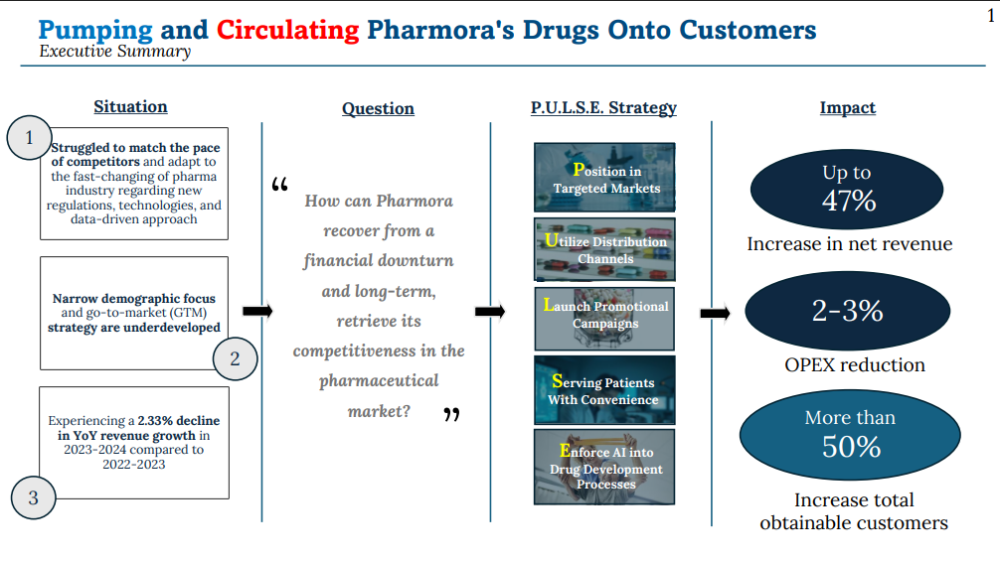
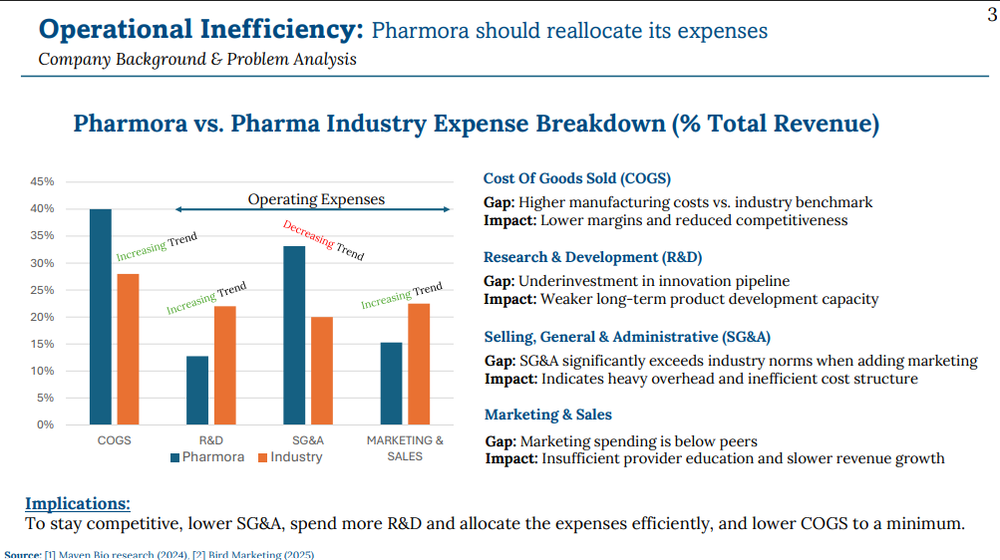
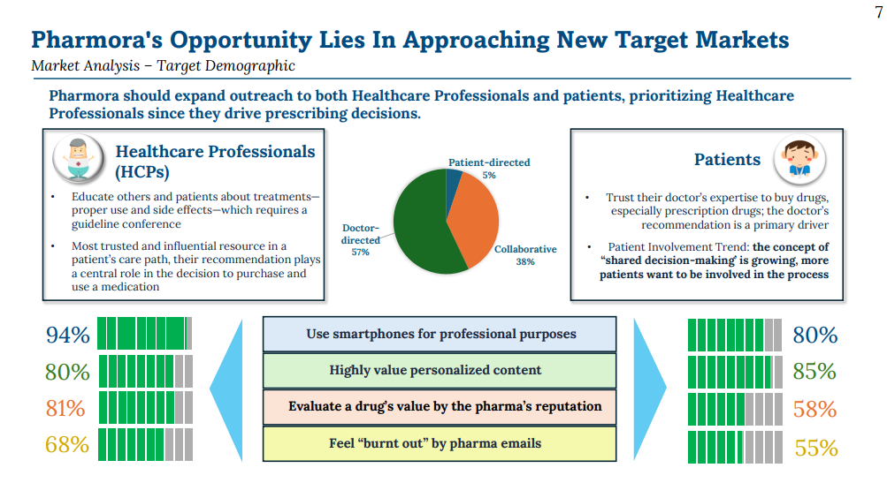
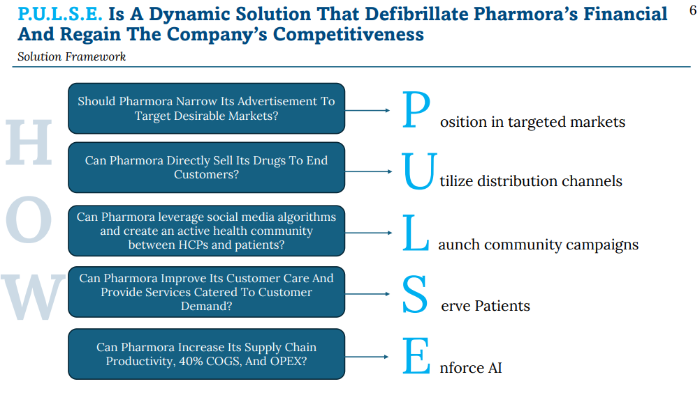
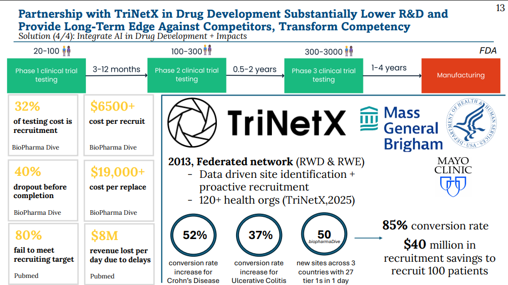
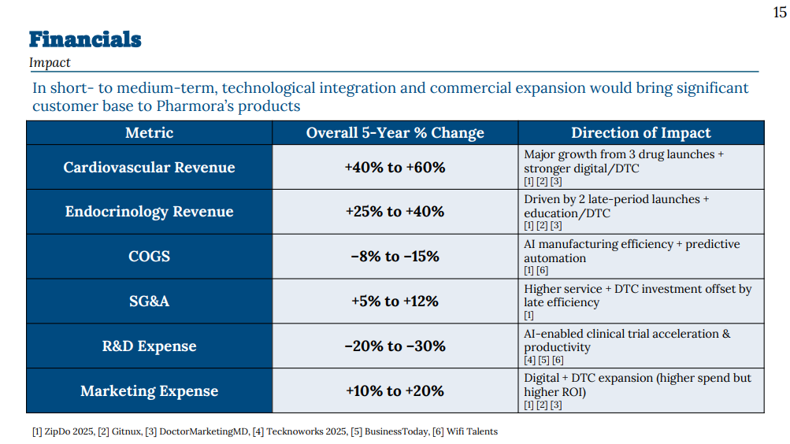
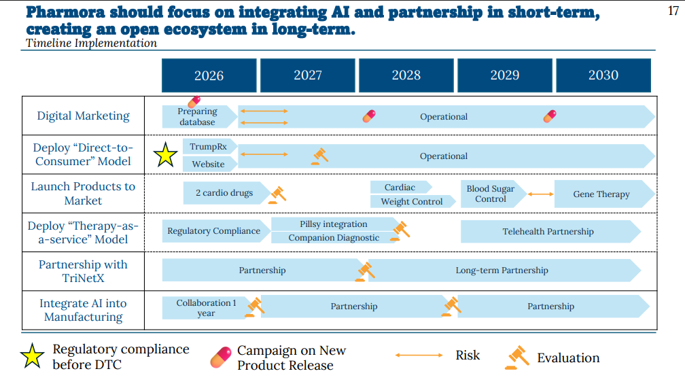

Projects / Pharmora P.U.L.S.E.
Pharmora P.U.L.S.E.: Reviving a Pharma Company's Growth
A five-part strategy to win back a drug maker's growth, shown slide by slide.

The Case, in One Page
What you're looking at: The whole case in one view. Pharmora's revenue growth fell 2.33% year over year; we asked how it could recover and stay competitive, and answered with five moves called P.U.L.S.E.
Why it matters: Our projections estimated up to 47% higher net revenue, 2–3% lower operating expenses, and 50%+ more customers we could reach.

The Diagnosis
What you're looking at: Pharmora's spending compared with the industry, as a share of revenue. Manufacturing costs (COGS, the cost of making the drugs) are about 40% of revenue, while spending on R&D and marketing sits below industry norms.
Why it matters: The company was overspending on making and running things, and underspending on innovation and reaching customers.

Who to Reach First
What you're looking at: In 57% of prescription decisions the doctor decides, 38% are shared with the patient, and 5% are patient-led.
Why it matters: Doctors drive prescribing, so our outreach targets healthcare professionals first, then patients.

The Strategy
What you're looking at: Five questions turned into five moves: Position in targeted markets, Utilize distribution channels, Launch community campaigns, Serve patients, Enforce AI.
Why it matters: The acronym ties every recommendation back to one clear plan.

Using AI to Cut R&D Cost
What you're looking at: Clinical trials are slow and costly. The slide cites that recruitment is 32% of testing cost, 40% of recruits drop out, and 80% of trials miss recruiting targets. We proposed partnering with a data network of 120+ health organizations to find patients faster.
Why it matters: Faster, cheaper recruitment lowers R&D spending and speeds up new drugs.

Projected Financial Impact
What you're looking at: Estimated five-year changes by line: cardiovascular revenue +40% to +60%, endocrinology revenue +25% to +40%, COGS −8% to −15%, R&D expense −20% to −30%. SG&A rises 5–12% and marketing 10–20%.
Why it matters: We invest more in digital and direct-to-consumer marketing and services up front, and offset it with AI-driven savings. These are directional estimates from industry benchmark sources, not audited forecasts.

The Rollout and Its Risks
What you're looking at: A five-year timeline with evaluation checkpoints, starting with regulatory compliance before direct-to-consumer sales. Alongside it, we mapped the main risks — regulation, patient data privacy, reputation, and over-reliance on tech partners — each with a mitigation.
Why it matters: The plan sequences the work and plans for what could go wrong.